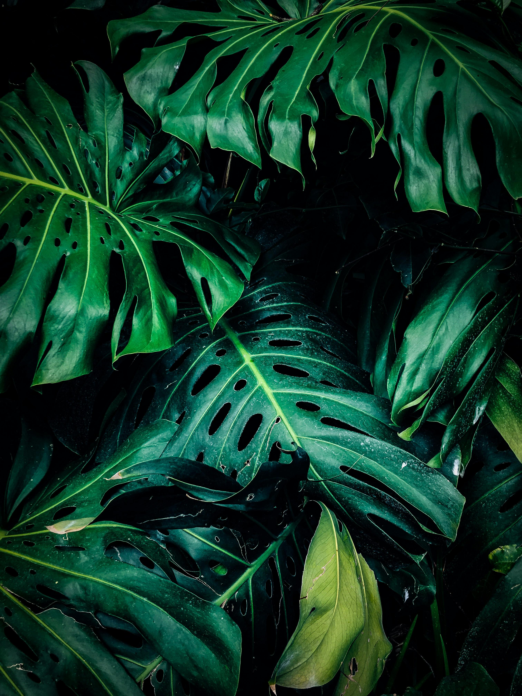
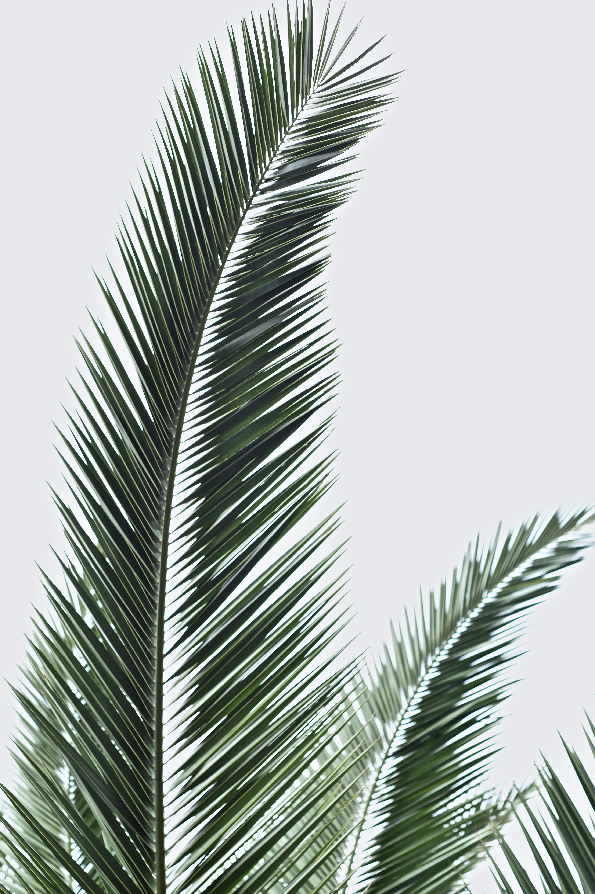

Surface of leaf raised in a series of domes between the veins on the upper surface, and therefore also with marked depressions. e.g. Rytigynia pauciflora,[71] Vitis vinifera
Veins sunken below the surface, resulting in a rounded channel. Sometimes confused with "guttered" because the channels may function as gutters for rain to run off and allow drying, as in many Melastomataceae.

Leaves are initiated in the apical bud (growing tip of a stem) along with the tissues of the stem itself. Certain organs that are superficially very different from the usual green leaf are formed in the same manner and are actually modified leaves.

The main function of a leaf is to produce food for the plant by photosynthesis. Chlorophyll, the substance that gives plants their characteristic green colour, absorbs light energy. The internal structure of the leaf is protected by the leaf epidermis, which is continuous with the stem epidermis.
Vein forming raised line or ridge which lies below the plane of the surface which bears it, as if pressed into it, and are often exposed on the lower surface. Tissue near the veins often appears to pucker, giving them a sunken or embossed appearance.
Pinnate (feather-veined) leaves, with a main central vein or rib (midrib), from which the remainder of the vein system arises. Palmate, in which three or more main ribs rise together at the base of the leaf, and diverge upward.
The oxygen liberated from green leaves replaces the oxygen removed from the atmosphere by plant and animal respiration and by combustion. The hydrogen obtained from water is combined with carbon dioxide in the enzymatic processes of photosynthesis to form the sugars that are the basis of both plant and animal life.
Open: Higher order veins have free endings among the cells and are more characteristic of non-monocotyledon angiosperms. They are more likely to be associated with leaf shapes that are toothed, lobed or compound.